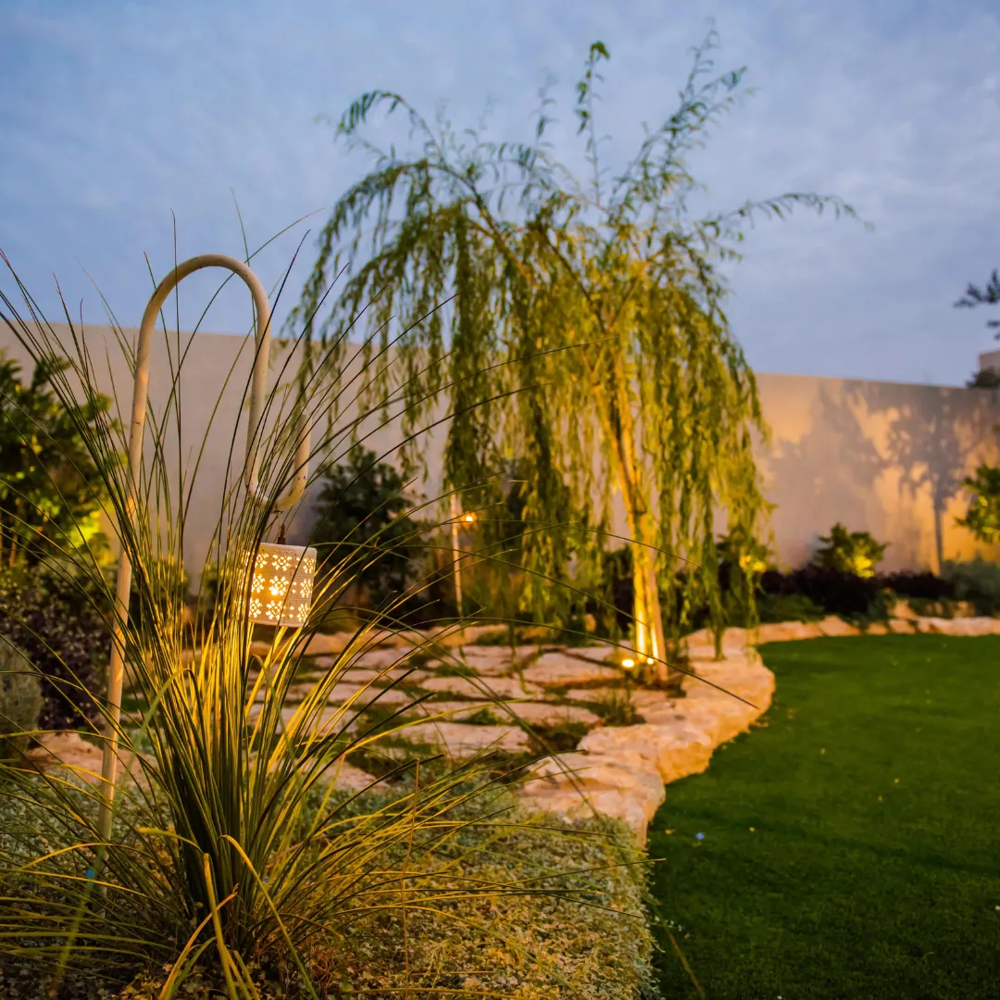

גינות שנבנו לחיים שמתנהלים בחוץ
מתכננים, מלווים ובונים גינות פרטיות ומרחבים ציבוריים — מהשרטוט הראשון ועד הצמח האחרון שנכנס לאדמה.
תכנון שמתחיל בשאלה איך אתם רוצים לחיות בחוץ
לפני שבוחרים אבן או עץ, אנחנו לומדים את המגרש, את האור, את הרוח ואת ההרגלים של מי שיגור שם.
כל גינה שלנו נבנית סביב מה שחשוב לכם: פינת ישיבה לערבי קיץ, דשא לילדים, ערוגות שדורשות מעט תחזוקה או גינה שמשנה צבעים עם העונות. מכיוון שאנחנו גם מתכננים וגם מבצעים, מה שמשורטט על הנייר הוא מה שנבנה בפועל.
עוד על המשרד
תאורת גן כחלק מהתכנוןפרויקטים אחרונים
ארבעה תחומים, משרד אחד
אדריכלות נוף
תוכנית מלאה למגרש: חלוקה למרחבים, חומרים, צמחייה, השקיה ותאורה, עם הדמיות ברורות.
ייעוץ נוף
פגישה בשטח למי שכבר יש לו גינה או תוכנית — כיוון מקצועי, בחירת צמחים ופתרון בעיות.
הקמת גינות פרטיות
ביצוע מלא כקבלן רשום: עבודות עפר, ריצוף, פרגולות, מערכות השקיה ושתילה.
פארקים ומרחבים ציבוריים
גנים קהילתיים, גני הנצחה ושטחים משותפים ביישובים, בתיאום עם הרשויות.
מהפגישה הראשונה ועד הגינה המוכנה
פגישה בשטח
מכירים את המגרש ואתכם, שומעים מה אתם צריכים ומה התקציב.
תכנון
תוכנית נוף מפורטת, בחירת חומרים וצמחייה, ותיקונים עד שהכול מדויק.
ביצוע
הצוות שלנו בונה את הגינה לפי התוכנית, עם לוח זמנים ברור.
ליווי
הדרכה על השקיה ותחזוקה, וזמינות גם אחרי שהגינה נמסרת.
יש לכם מגרש, חצר או גג שמחכים לתוכנית?
ספרו לנו קצת על המקום ונחזור אליכם לתיאום פגישה בשטח.
השאירו פרטים